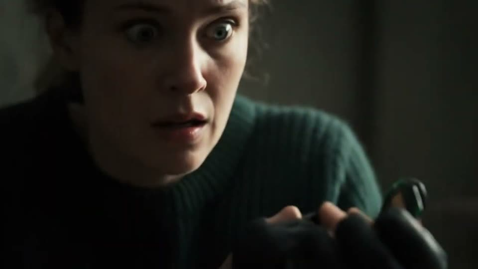

A gloved hand carefully slices open the spine of an ancient, l…
PRF-022PerformanceGoogle Veo (official guide example)by Google Cloud (official Veo prompt guide)2026-10-17

Transformations or processes: a flower blooming in fast-motion, ice melting, a city skyline developing over time (however, keep clip length in mind for events that occur over a longer period) Example The following video
Prompt
A gloved hand carefully slices open the spine of an ancient, leather-bound book with a scalpel. The hand then delicately extracts a tiny, metallic data chip hidden within the binding. The character's eyes, previously focused and calm, widen in a flash of alarm as a floorboard creaks off-screen. They quickly palm the chip, their head snapping up to scan the dimly lit room, their body tense and listening for any other sound
Our Seedance 2.5 adaptation
[ADAPTED for Seedance 2.5 by Grok Bot; not the creator's prompt. Follows the official BytePlus Seedance 2.5 prompt guide: asset binding → one-sentence summary → integer-second timeline → consistency notes → negatives.] API: duration 10, ratio 2.39:1 look (use 21:9), resolution 1080p, generate_audio true. Summary: A 10-second suspense insert in a dim study. A gloved hand slices open an ancient book's spine and extracts a tiny data chip, then a floorboard creak snaps the character into alarm. 0-4s: Macro close-up. A gloved hand draws a scalpel down the leather spine and peels back the binding. 4-6s: Tweezers lift a tiny metallic chip that catches the lamplight. At the 6-second mark: a floorboard creaks off-screen. 6-8s: Cut to a close-up of the character's eyes, previously calm and focused, widening in alarm. Normal human eyes, no glow. 8-10s: Medium shot. They palm the chip and their head snaps up to scan the room, body tense, listening. Keep consistent: the same gloves, book and lamp. One character only. Audio: scalpel through leather, paper fibers tearing, the creak, held breath. No BGM. No subtitles.
Tags: action sequencing, emotional beat